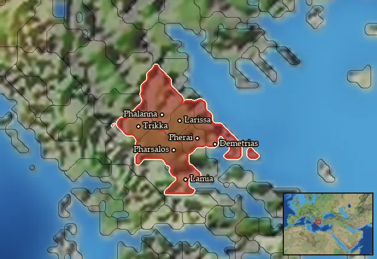

RTR: Imperium Surrectum
RTR: Imperium SurrectumRIS wiki › mercenaries
Thessaly
← all mercenary pools · wiki index
Mercenary pool: 5 units for hire in 7 regions.

Mercenaries
| Unit | Cost (dn) | Experience | At start | Most in pool | Added per turn | Who can hire | |
|---|---|---|---|---|---|---|---|
| Mercenary Phalangites | 5,627 | 3 | 0 | 1 | 0.0587–0.1173 | Only Achaean League, Antigonid Kingdom, Boeotians, Cyrene, Egyptians, Epirus, Greek City States, Hellenistic Rebels, Lysiad Kingdom, Megalopolis, Pergamon, Pontus, Ptolemaic Empire, Ptolemaic Rebels, Seleucid Empire, Seleucid Rebels (Asia Minor), Seleucid Rebels (Upper Satrapies), Sparta, Taras | |
| Mercenary Thessalian Peltasts | 2,799 | 0 | 1 | 2 | 0.2359–0.4717 | Any faction | |
| Mercenary Perrhaibian Cavalry | 3,968 | 1 | 2 | 2 | 0.1248–0.2496 | Any faction | |
| Mercenary Tarantine Cavalry | 4,002 | 1 | 1 | 1 | 0.0825–0.165 | Any faction | |
| Mercenary Thessalian Cavalry | 6,385 | 3 | 1 | 2 | 0.0775–0.1551 | Any faction |
Regions (7)
Histiaiotis · Magnesia · Malis-Ainis · Pelasgiotis · Perrhaibia · Thessalia · Thessaliotis